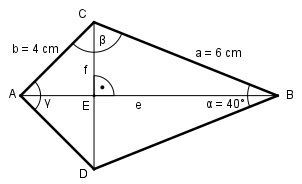

Aufgabe 158 Wie groß ist die Diagonale e des Drachenvierecks?

Sätze am Drachenviereck: Die Diagonalen stehen senkrecht aufeinander. Die Dreiecke ABC und ADB sind kongruent. Die Diagonale e halbiert f und die Winkel bei A und B. Im Dreieck EBC: f/2 sin α/2 = ----- | *a a a * sin α/2 = f/2 | *2 f = 2 * a * sin α/2 = = 2 * 6 cm * sin 20° = 2 * 6 cm * 0,342 = 4,1 cm Im Dreieck ADC: Fall SSS: f2 = b2 + b2 - 2 * b * b * cos γ |+2*b2*cos γ f2 + 2 * b2 * cos γ = 2 * b2 | -f2 2 * b2 * cos γ = 2 * b2 - f2 | :2 * b2 2 * b2 - f2 cos γ = ------------- = 2 * b2 2 * 42 - 4,12 = --------------- = 0,4747 --> γ = 61,7° 2 * 42 β = 180° - α/2 – γ/2 = 180° - 20° - 30,9° = = 129,1° Im Dreiec kABC: Fall SSW: Sinussatz: e b ------- = --------- |*sin β sin β sin α/2 b * sin β e = ------------ = sin α/2 4 cm * sin 129,1° 4 cm * 0,776 = ------------------- = -------------- = 9,1 cm sin 20° 0,342